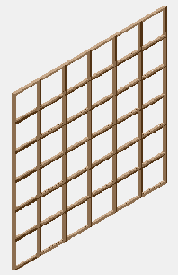
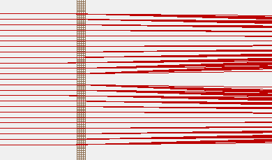

Purpose / Description
This example demonstrates the simulation of particle scattering by non-ideal grids using a "particle jumping" ("ion jumping") trick. The method allows accurate simulation of a non-ideal grid inside a larger system. This particular example uses non-ideal grids inside a TOF instrument. See the included SIS application notes (#47, #52) for background on this example.
A non-ideal grid generally consists of a mesh of fine wires (see figure below-left). Most particles go through the grid with little trajectory distortion. This is the ideal case, of an ideal grid. However, some particles splat against the grid wires. Others the travel quite close to the grid wires might have trajectories that bend significantly. (See figure below-right.)


This is an advanced SIMION simulation. You should be familiar with the use of user programs before attempting this simulation. Please examine comments included within the program file (ref70.lua).
An alternative approach is Example: nonideal_grid\PA instance jumping.
Files in this example
- README.html - description of this example
- ref70.iob - workbench
- *.pa* - potential arrays
- source.gem - GEM file used to generate source.pa
- gridhop.gem - GEM files used to generate gridhop.pa
- mgrid70.gem - GEM file used to generate mgrid70.pa#
- ref70.rec - data recording file
- ref70.fly - ion definitions
- ref70.lua - workbench user program (performs particle jumping trick)
- app-47.htm, app-52.htm - SIS application notes that describe this example further
- plot.gp - gnuplot script for plotting TOF histogram (optional)
Usage
- 1. Load the .IOB file. (Click View/Load Workbench, select ref70.iob.).Select Yes if asked to build/refine the PAs.
- Note: the GEM file gives a model of a 70 lpi grid. If you use a different mm/gu scaling factor (default 0.004) or a different grid size (default 136 x 136 x 272), you will need to adjust the GEM file, the grid_inst_x [y,z] and scaling variables in the user programs, and the mm/gu scaling factor on the PA instance in the workbench view.
- 2. Fly particles. (Click Fly'm.) You may wish to set the display to ZY view and set the display quality (Qual) to 8. Note that when the ions hit any of the grids (the two grids on the upper right acceleration region or the two grids on the reflectron on the upper-left), they temporarily jump to the fine grid on the lower-right. Zoom in to the fine grid to see the ions traveling in the fine grid, where the non-ideal grid traversal is accurately modeled. To hide the trajectory lines when the ions jump, go to the Variables tab, set the "hide_jumps" variable, and refly the ions.
Source
- 2012-03 - remove ref70_prepare.lua (since IOB loading now autogenerates PAs).
- 2008-10 - D.Manura, minor updates/cleanup for SIMION 7/8 compatibility; added gnuplot script (plot.gp) for TOF histogram; seed random number generator only once (speed); converted to SIMION 8.0 Lua.
- 1996 - Steve Colby, SIS (original author)
See Also
- Doc: grid - general notes on simulating grids in SIMION.
- The "Non-ideal Grids" sections of the Advanced ASMS Course uses particle jumping tricks in a non-ideal grid. See particularly the grid2d*.gem and grid3d*.gem files. (files)
- Example: nonideal_grid - other nonideal grid examples
- Example: bradbury_nielsen_grid -- non-ideal grid with RF applied to wires.
- Example: Multiprocess - demonstrates particle jumping across instances of SIMION running on possibly different computers
- SIMION Info: Grid - notes on simulating grids in SIMION
- Example: TOF
- SIS Application Note 59 - Computer Modeling of a TOF Reflectron With Gridless Reflector Using SIMION 3D (used particle jumping technique)